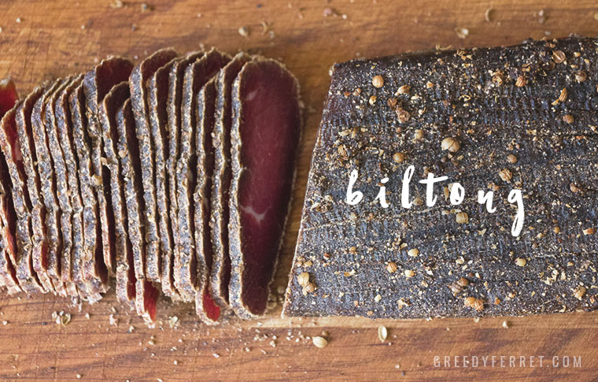

Biltong

Biltong is cured meat which has its origins in much the same way as many other famous cured types of meat.
It was invented or happily came about because Dutch settlers needed a way to preserve fresh meat for their long travels exploring the rugged South African terrain.
They were known as the "Voortrekkers" and the biltong story started with them.
With generation after generation using roughly the same method and ingredients to make it.
To this day its enjoyed in excessive quantities as its such an addictive snack.
Perfect for game days, high protein diets and anyone that enjoys great food.
Ingredients
(1/4 cup) coriander seeds
(1 tablespoon) milled black pepper
Steps
- Cut the meat into strips about 2 cm x 3 cm (3/4-inch x 1 1/4-inches). Roast the coriander seeds in a dry frying pan to bring out the flavour. Crush lightly with a pestle and mortar and mix with the salt and pepper. Sprinkle a little into a glass dish, top with a layer of meat strips, and season once more. Continue this way until meat and seasoning are used up.
- Refrigerate for a day, mixing every couple of hours so that the meat flavours evenly.
- Hang up to dry in a suitable spot (high in the garage rafters or behind the fridge where there is some movement of air). Straightened paper clips make handy fasteners!
- Drying time is about 5 days, depending on the weather, and whether you prefer your biltong crisp or slightly moist.